I came to Classics at A-Level, where I studied Classical Civilisation. At the time, good revision materials were hard to come by — so I put together my own and built a small website to share them, starting with booklets for the Odyssey.
That was the beginning of Classicalia. The idea was simple: free, decent resources for classical subjects, available to any student regardless of school or budget. It has grown from there into a platform used by students and teachers across the UK.
Everything here — lessons, booklets, vocabulary tools — is written by a practising Classics teacher. It is free to use and always will be. The project runs on donations from people who find it useful — if that's you, you can become a supporter.
If you would like to get in touch — questions, ideas, or to use Classicalia at your school — you can email me at lawrence@classicalia.co.uk.

Practise. Track what you know. Get tested on what you don’t. by Lawrence McNally
Vocabulary and content testers that remember every answer you give, show you exactly where you stand, and keep bringing back your weakest areas until they stick.
The testers work for anyone. With a free account, Classicalia keeps a record of every word and every question you answer, works out what you know and what you don’t, and builds your next test around your weak spots.
Classicalia has no paywalls, no ads, and no subscriptions. But hosting, tools, and the time to write new resources all cost something, and the project relies on donations to keep running. If the site has helped you or your students, you can help keep it going.